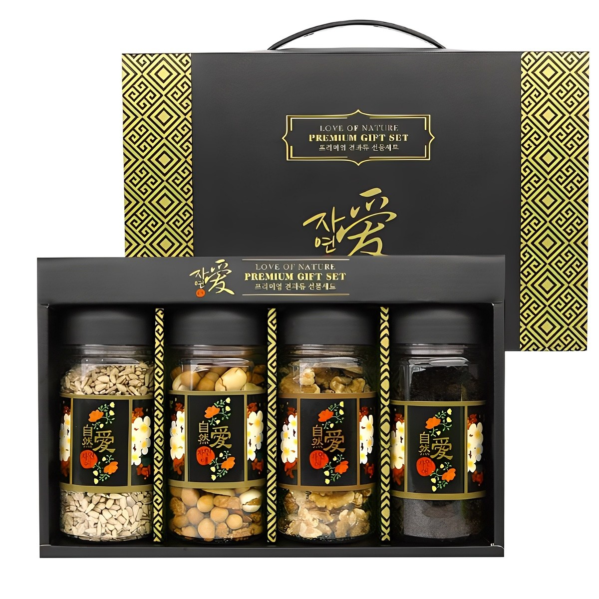
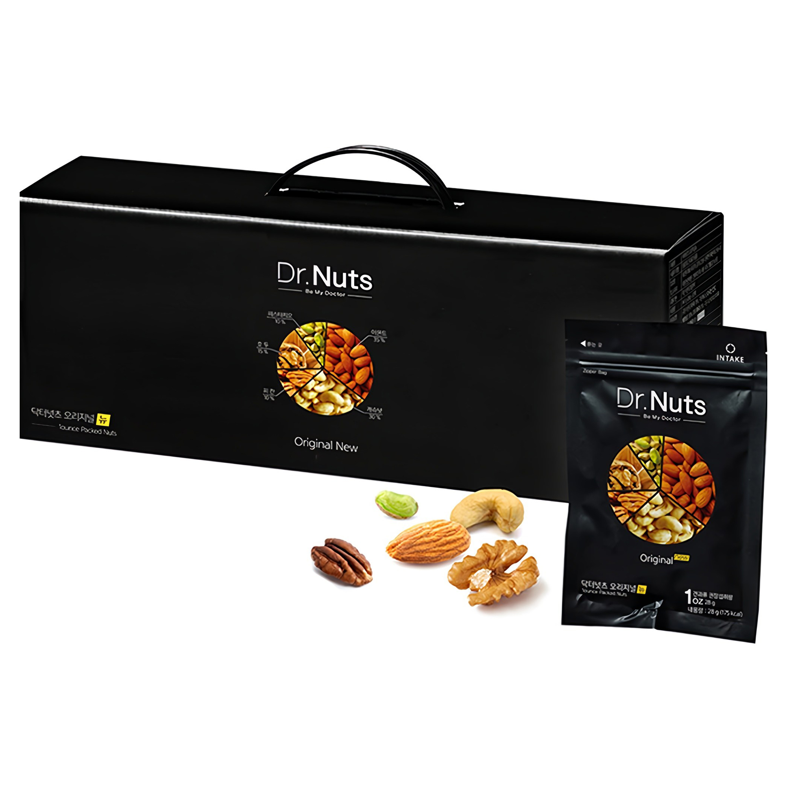
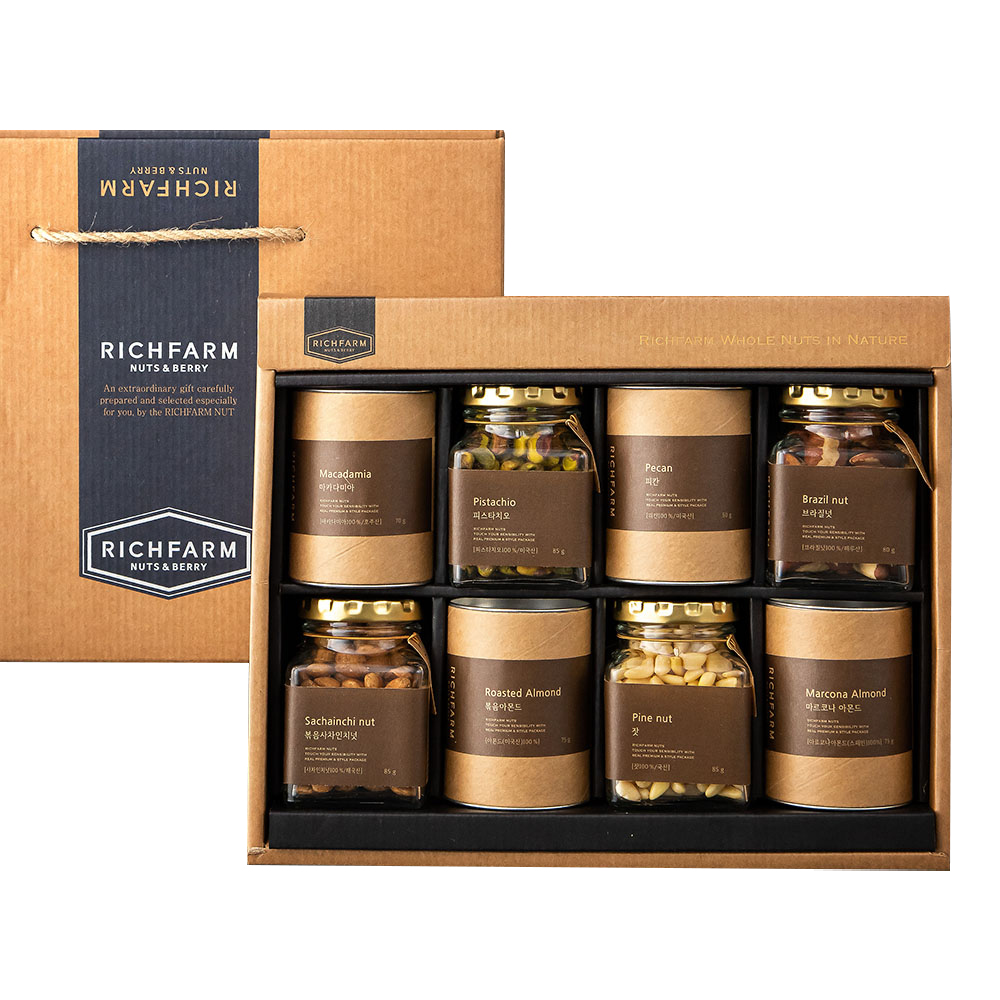

홈 › 제품리뷰 › 식품/먹거리
견과류 선물세트, 대용량이냐 개별포장 하루견과냐
작성: 생활서식 모음 · 2026-07-20
파트너스 활동의 일환으로 일정액의 수수료를 지급받습니다
🛒 오늘의 쿠팡 특가 보러가기 →
견과류 선물세트, 뭘 골라야 할지 막막하죠?
핵심은 "구성과 포장(개별/대용량), 용도" 3대 를
"집에서 대용량으로" "매일 개별포장으로" "제대로 선물"용도별 정답 까지 담았으니
📋 목차
견과류 선물세트, 대용량이냐 개별포장 하루견과냐 — 결론 먼저 스펙 비교표: 한눈에 보기 견과류 선물세트 고를 때 봐야 할 4가지 자가소비냐 선물이냐, 뭘 사야 할까? 자주 묻는 질문 (FAQ) 결론: 한 줄 요약
견과류 선물세트, 대용량이냐 개별포장 하루견과냐 — 결론 먼저
견과류는 "개별포장으로 매일이냐, 대용량으로 집에서냐" 로 갈려요.닥터넛츠 하루견과 처럼 개별포장이 편합니다. 집에서 넉넉히 덜어 먹으면 4종 대용량이 가성비 좋고, 격식 있는 선물이면 홀넛 프리미엄입니다.
1 자가소비·가성비 (가성비 초이스)
가성비

4종 대용량 가성비
1. 다반사 4종 견과 선물세트 (710g)
아몬드·호두 등 4종 구성 710g 대용량 집에서 넉넉히 덜어 먹기
개별포장은 아니어도
추천 대상
집에서 견과류를 넉넉히 덜어 먹는 분 여러 종류를 가성비로 즐기려는 분 간단한 선물 겸 자가소비를 원하는 분 장점
아몬드·호두 등 4종 구성으로 다양하게 즐김 710g 대용량이라 g당 가격이 저렴한 편 집에 두고 간식·요리 토핑으로 두루 활용 단점
개별포장이 아니라 개봉 후 눅눅해지지 않게 밀폐 보관 필요 이 제품은 집에서 대용량 자가소비용 입니다. 매일 개별포장으로 챙기려면 2번 하루견과, 격식 선물이면 3번 홀넛으로 가세요. "집에서 넉넉히"면 가성비 최고예요.
한줄 리뷰
"집에 두고 간식·요리에 넉넉히"면 4종 대용량이 알뜰합니다. 여러 종류를 저렴하게 즐겨요. 매일 개별포장·선물용이면 2·3번을 보세요.
주요 스펙
제품: 다반사 4종 견과 선물세트 (710g) 구성: 견과 4종 · 710g 대용량 용도: 자가소비·간단 선물 배송: 로켓배송 가격: 약 16,400원 (변동 가능) ※ 실제 스펙·가격과 차이가 있을 수 있습니다
2 매일·개별포장 (베스트 초이스)
베스트

개별포장 하루견과
2. 닥터넛츠 하루견과 선물세트 (840g)
하루 한 봉 개별포장 신선하게·번거로움 없이 매일 챙기기·선물 겸용
하루 한 봉씩 신선하게
추천 대상
매일 견과류를 한 봉씩 챙겨 먹는 분 개봉 후 눅눅해지는 게 싫은 분 가볍게 선물하기도 좋은 걸 원하는 분 장점
하루 한 봉 개별포장이라 매번 신선하게 섭취 덜어 먹는 번거로움 없이 봉지째 간편 개별포장이라 사무실·외출 시 챙기기 좋고 선물 겸용 단점
개별포장 특성상 대용량 벌크보다 g당 단가는 높은 편 집에서 넉넉히 대용량이면 1번, 격식 선물이면 3번 홀넛입니다. 2번은 "개별포장 신선·간편" 의 실속 구간 — 매일 챙기는 분에게 가장 무난합니다.
한줄 리뷰
"매일 견과 한 봉씩 신선하게"면 개별포장 하루견과가 편합니다. 눅눅할 걱정 없고 챙기기도 좋아요. 집에서 대용량·격식 선물이면 1·3번을 보세요.
주요 스펙
제품: 닥터넛츠 하루견과 선물세트 (840g) 구성: 개별포장 하루견과 용도: 매일 섭취·선물 겸용 배송: 로켓배송 가격: 약 38,390원 (변동 가능) ※ 실제 스펙·가격과 차이가 있을 수 있습니다
3 격식 선물 (프리미엄)
프리미엄

홀넛 프리미엄 선물
3. 리치팜너트 홀넛 주얼 견과세트 (605g)
통 견과(홀넛) 고급 구성 고급 선물 포장 명절·격식 선물용
통 견과에 고급 포장까지
추천 대상
명절·격식 있는 선물을 하려는 분 통 견과(홀넛)의 고급 구성을 원하는 분 받는 분에게 정성을 보이고 싶은 분 장점
통 견과(홀넛) 위주의 고급스러운 구성 선물 포장이 격식 있어 받는 분 만족도가 높음 명절·인사용 선물로 적합 단점
집에서 자가소비 대용량이면 1번, 매일 개별포장이면 2번이 합리적입니다. 3번은 격식 있는 선물 이 목적일 때 값어치가 있습니다.
한줄 리뷰
"명절·윗분 선물로 격식 있게"면 홀넛 프리미엄이 좋습니다. 통 견과에 포장도 고급스러워요. 자가소비·매일용이면 1·2번이 실속 있습니다.
주요 스펙
제품: 리치팜너트 홀넛 주얼 견과세트 (605g) 구성: 통 견과(홀넛) · 고급 포장 용도: 명절·격식 선물 배송: 로켓배송 가격: 약 67,830원 (변동 가능) ※ 실제 스펙·가격과 차이가 있을 수 있습니다
스펙 비교표: 한눈에 보기
가격·풍량·무게 중 본인에게 중요한 기준부터 보세요. "최고" 표시는 3제품 중 객관적 1위 값입니다.
← 좌우로 스크롤 →
견과류 선물세트 고를 때 봐야 할 4가지
포장·구성만 맞춰도 "눅눅함·선물 부실" 실패를 막습니다.
1) 포장 — 개별 vs 대용량
개별포장(하루견과): 매번 신선, 챙기기 간편대용량: g당 저렴, 대신 밀폐 보관 필요매일 챙기면 개별포장, 집에서 덜어 먹으면 대용량 2) 구성 — 종류·통견과
아몬드·호두·캐슈 등 종류가 다양하면 질리지 않음 통 견과(홀넛)는 고급스럽고 식감이 좋음 취향·알레르기(땅콩 등)를 고려해 구성 확인 3) 용도 — 자가소비 vs 선물
자가소비: 대용량·개별포장 실속선물: 포장·구성이 격식 있는 프리미엄명절·윗분 선물이면 포장 완성도가 중요 4) 신선도·보관 — 눅눅함 방지
견과는 개봉 후 산패·눅눅함이 생기므로 밀폐 보관 대용량은 나눠 밀폐하거나 냉장·냉동 보관 개별포장은 신선도 유지에 유리 자가소비냐 선물이냐, 뭘 사야 할까?
용도와 포장 취향만 정하면 답이 나옵니다.
집에서 대용량: 1번 다반사 4종 → 1만원대 가성비매일 개별포장: 2번 닥터넛츠 하루견과 → 신선·간편격식 선물: 3번 리치팜너트 홀넛 → 프리미엄자주 묻는 질문 (FAQ)
Q1. 견과류, 개별포장이 대용량보다 나은가요? 용도에 따라 다릅니다. 개별포장(하루견과)은 매번 신선하고 덜어 먹는 번거로움이 없어 매일 챙기거나 사무실·외출에 좋습니다. 대용량은 g당 가격이 저렴해 집에서 넉넉히 덜어 먹거나 요리에 쓰기 좋지만, 개봉 후 밀폐 보관을 잘해야 눅눅해지지 않습니다. 매일 간편하게면 개별포장, 집에서 가성비로면 대용량을 고르세요.
Q2. 견과류는 하루에 얼마나 먹는 게 좋나요? 견과류는 영양이 있지만 열량도 높은 식품이라 적당량이 좋습니다. 흔히 하루 한 줌(하루견과 한 봉 분량) 정도를 권장하는데, 개별포장 제품이 이 적정량에 맞춰 나와 과식을 막기 편합니다. 다만 개인의 식단·건강 상태에 따라 적정량은 다를 수 있으니, 특정 건강 문제가 있다면 전문가와 상담해 섭취량을 정하세요.
Q3. 견과류 보관은 어떻게 해야 눅눅해지지 않나요? 밀폐와 서늘한 보관이 핵심입니다. 견과류는 공기·습기·햇빛에 노출되면 눅눅해지거나 산패(기름이 상함)될 수 있습니다. 개봉 후에는 밀폐용기에 담아 서늘하고 그늘진 곳에 두고, 대용량이라 오래 두고 먹는다면 냉장·냉동 보관이 신선도 유지에 좋습니다. 개별포장 제품은 이런 보관 부담이 적습니다.
Q4. 선물용으로는 어떤 견과세트가 좋나요? 포장과 구성이 격식 있는 제품이 좋습니다. 명절이나 윗분 선물이라면 통 견과(홀넛) 위주의 고급 구성과 선물 포장이 잘 된 프리미엄 세트(3번 유형)가 받는 분 만족도가 높습니다. 반면 가볍게 챙겨주는 선물이라면 개별포장 하루견과도 실용적이라 좋습니다. 선물의 격식 정도에 맞춰 포장·구성을 고르세요.
Q5. 땅콩 알레르기가 있는데 견과세트 먹어도 되나요? 주의가 필요합니다. 견과류 알레르기는 종류별로 다르고, 여러 견과가 섞인 세트는 특정 견과(땅콩·호두 등)가 포함되거나 같은 설비에서 처리돼 교차오염 가능성이 있습니다. 알레르기가 있다면 구성 성분과 알레르기 유발물질 표시를 반드시 확인하고, 의심되면 섭취를 피하거나 전문가와 상담하세요. 안전이 우선입니다.
결론: 한 줄 요약
1) 다반사 4종 (710g) — 약 16,400원 / 자가소비·대용량. 집에서 넉넉히, 1만원대 가성비.2) 닥터넛츠 하루견과 (840g) — 약 38,390원 / 매일·개별포장. 신선·간편, 선물 겸용.3) 리치팜너트 홀넛 (605g) — 약 67,830원 / 격식 선물. 통 견과+고급 포장.이 포스팅은 쿠팡 파트너스 활동의 일환으로, 이에 따른 일정액의 수수료를 제공받습니다.